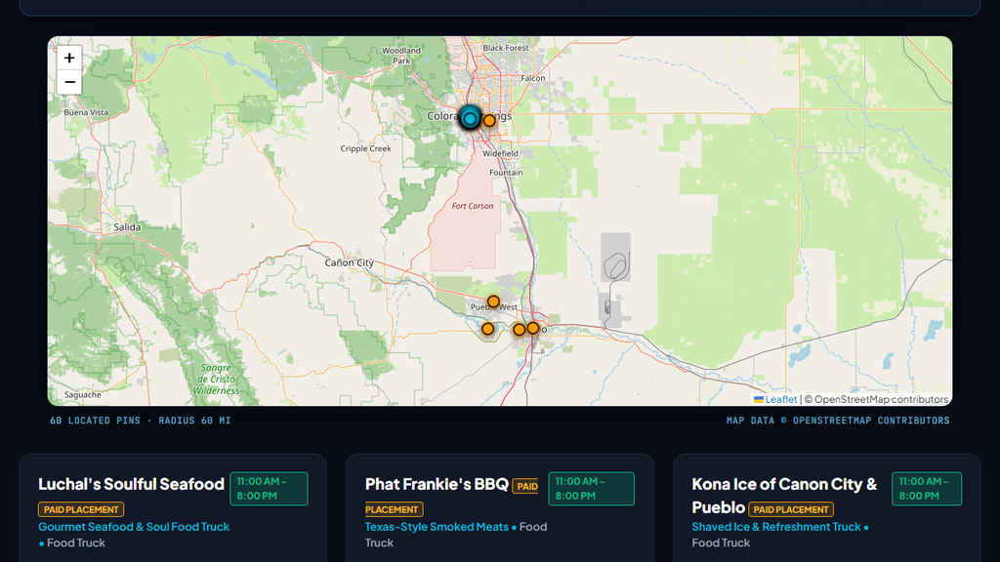

Live · Built in Pueblo, Colorado
Know what's open before you head out.
932 restaurants, bars, cafes, and fuel stops across 8 southern Colorado cities. Live open/closed status, hours, and phone — all on one map. Free to search.
932 venues · 8 cities · 42 fuel stops · no account needed

60 located pins in rangemap data © OpenStreetMap
Every venue pin is a real database row.
Data comes straight from the live database. No cached screenshots, no guessed ratings, no invented reviews.
Live open/closed status
Hours-of-operation data sourced from each venue record. See which spots are open right now without calling ahead.
Phone and hours on every pin
Tap any pin to see full hours and a phone number. Call directly from the map without writing anything down.
8 cities in one view
Pueblo, Colorado Springs, Pueblo West, Fountain, Manitou Springs, Falcon, Peyton, and the Fort Spring area.
Fuel stops alongside restaurants
42 gas and truck stops on the same map — useful when you're unfamiliar with an area and need both.
Three steps to somewhere open.
From opening the tab to getting directions.
Open the map
The radar loads in any browser. No app download, no account. Sharing your location centers the view on you.
Filter by type or city
Narrow to restaurants, bars, coffee, or fuel. Switch between any of the 8 covered cities, or search by name.
Tap a pin and go
Each pin shows open/closed status, hours, and a phone number — with directions to it. No login at any step.
What travelers are reporting
Real reviews submitted through the radar. Ratings are earned, never assigned.
Best stop on I-25. Bathrooms are immaculate, the dog run is clean and well-fenced, and parking is easy.
Very RV friendly — great wide turnarounds, clean store, and our golden retriever loved the pet area.
Put your restaurant on the radar.
Get in front of locals actively looking for somewhere to eat right now. Founding Professional is founder pricing for early venues, at a rate locked for life.